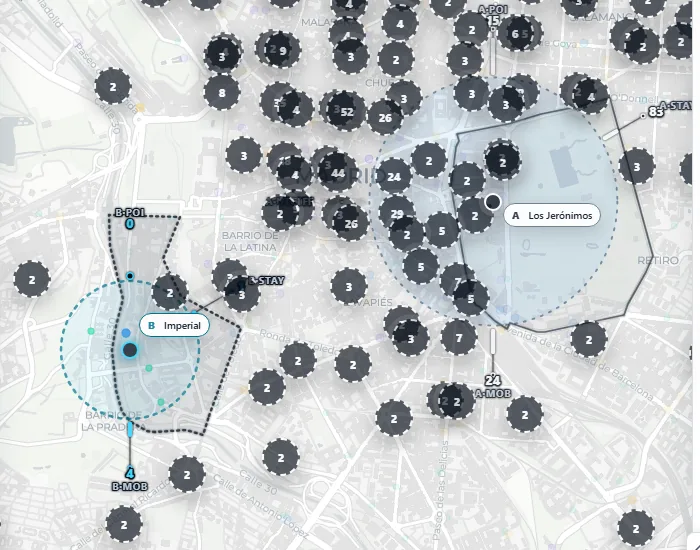
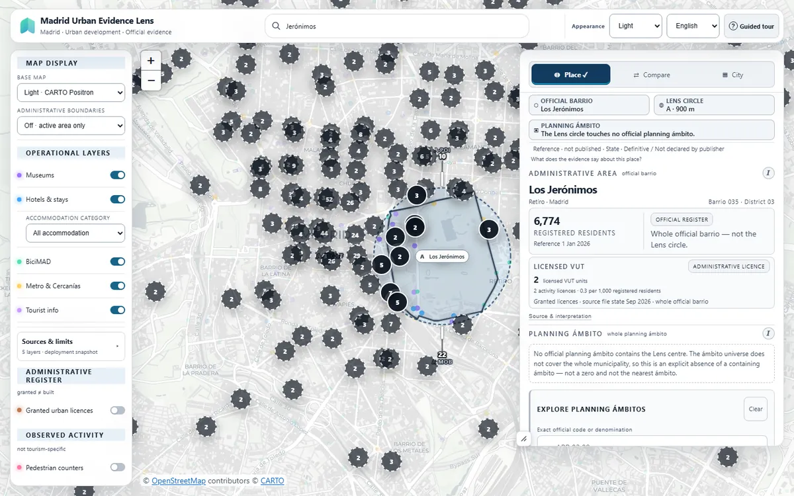
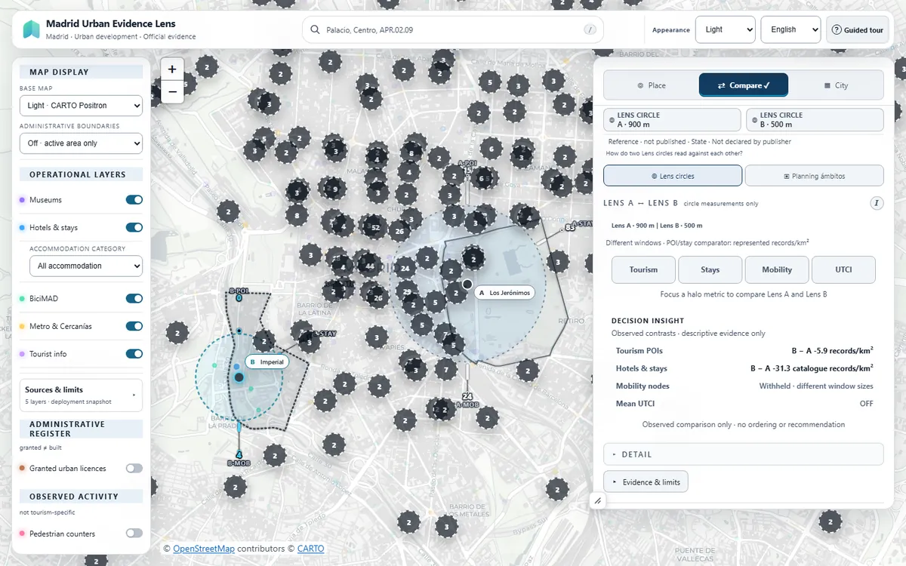
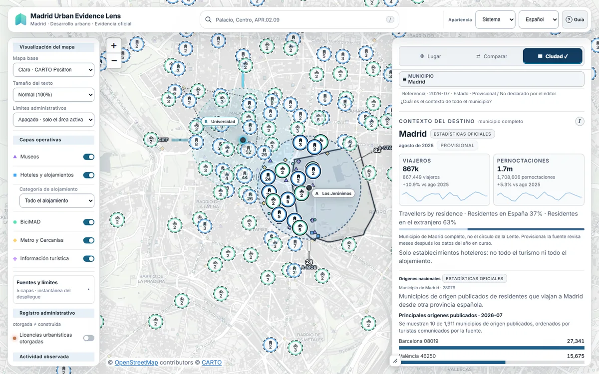
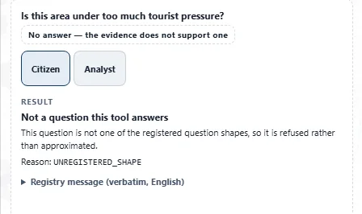
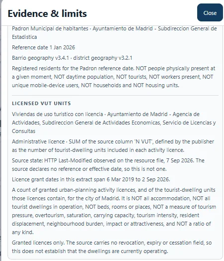

Plataforma de evidencia territorial
Madrid,más alládel mapa.
Explora qué documentan las fuentes oficiales sobre un lugar, compara dos zonas con reglas explícitas y comprueba dónde termina cada dato.
Datos públicos oficiales · Fuentes y fechas consultables · Lectura descriptiva, no causal

Abrir esta misma lectura en Lens ↗
01 · Qué puedes hacer
Tres maneras de leer la ciudad.
Cada modo cambia la pregunta, no las reglas. Todas las vistas son capturas reales de la aplicación.
Sitúa un círculo de análisis y lee qué documentan los registros oficiales de su barrio y su ámbito.

- Círculo Lens con radio explícito (aquí, 900 m).
- Barrio oficial, círculo y ámbito de planeamiento se nombran por separado.
- Las cifras muestran su registro oficial y su fecha de referencia.
Dos lentes, A y B, con radio y ámbito propios. Lens describe las diferencias observadas y retiene las que no son comparables.

- Dos ventanas explícitas: A, 900 m; B, 500 m.
- Compara círculos Lens o ámbitos de planeamiento, nunca una mezcla.
- Contrastes observados, sin orden ni recomendación; la movilidad se retiene porque las ventanas difieren.
Estadísticas de todo el municipio con su mes de referencia y su estado, sin trasladarlas a una calle o a tu círculo.

- Ámbito explícito: el municipio de Madrid completo.
- Estadística oficial con su mes de referencia y su estado provisional.
- Indica lo que no cubre: solo establecimientos hoteleros, no todo el turismo.
02 · Evidencia y límites
Lo que sabemos, de dónde viene y dónde termina.
- Fuente
- Cada lectura remite a su publicador, su fecha de referencia y su estado, definitivo o provisional. No es un monitor en tiempo real.
- Escala
- Barrio, ámbito de planeamiento y círculo Lens son unidades distintas; Lens nunca las intercambia.
- Límite
- Sin rankings, predicciones ni causas. Cuando la evidencia no permite responder, Lens lo dice.

